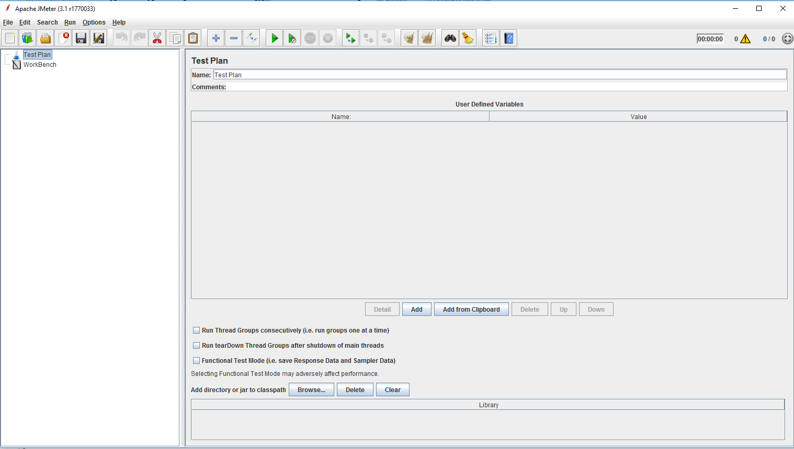
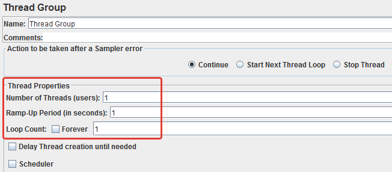
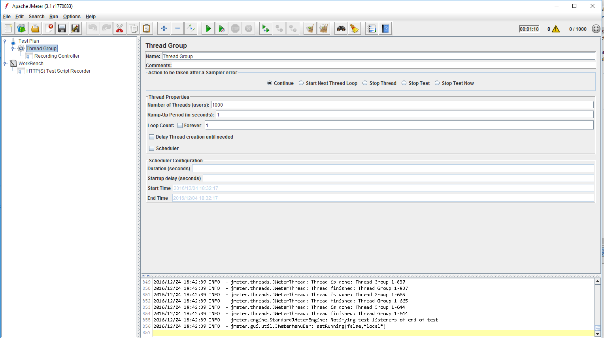
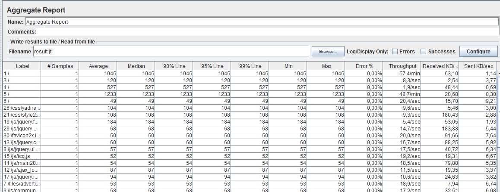

Тестирование: нагрузочное и интерфейсное
Колмогорцев Дмитрий / dkolmogortsev@naumen.ru
О чем поговорим:
- Нагрузочное
- Интерфейсное тестирование
- Нагрузочное + selenium
- Практика
Нагрузочное тестирование

Проблема
- Написана новая версия продукта - 4.0 (прошлая 3.8)
- Старой пользуется много крупных клиентов(большое кол-во пользователей одновременно)
- Новый продукт, конечно, прекрасен, но мы не знаем насколько хорошо он работает
- Нужно сэмулировать работу пользователей
Тестирование производительности
Проверить как быстро может работать система или её компоненты
Что можно проверить:
- Время отклика
- Время отображения
- Пропускную способность
Время отклика

Время отображения

Пропускная способность

Виды тестирования производительности:
- Нагрузочное(load)
- Стресс (stress)
Нагрузочное тестирование
Цель: проверить показатели работы приложения при ожидаемой нагрузкеСтресс тестирование
Цель: проверить показатели работы приложения при диспропорциональной нагрузкеStress in a nutshell

Процесс проведения
- Определяем требуемые показатели
- Определяем сценарий нагрузочного тестирования
- Проводим тестирование*
- Собираем результат
- ??????
- PROFIT, а может и нет
*Проводить тестирование всегда стоит на одном и том же сервере
JMeter
Умеет тестировать:
- Web
- JDBC
- и другое
Начало работы
Настройка групп потоков
Test plan -> Thread group

Получаем сценарий
Два пути:
- Написать запросы руками
- Записать сценарий из браузера
Запись сценария

Настройка записи
Workbench -> Non-tests element -> HTTP Test Script Recorder

Записанные запросы
Test plan -> Thread group -> Recording controller

Вывод результатов
Test plan -> Thread group -> Aggregate result

Интерфейсное тестирование: Selenium
Проблема
Продукт стал большим и зрелым, у ручных тестировщиков нет времени тестировать всю функциональность продукта.
Нужно автоматизировать!
Нужно автоматизировать!
Место в пирамиде тестирования

Selenium
Инcтрумент для автоматизированного тестирования WEB-приложений- Selenium WebDriver
- Selenium Grid
Selenium Webdriver
- Реализация на многих языках
- Из коробки поддерживает управление Firefox
- Можно научить управлять даже IE
Samples
// Создаем новый webdriver с указанием на банарник firefox
WebDriver wd = new FirefoxDriver(new FirefoxBinary(
new File("D:\\ff\\firefox.exe")), new FirefoxProfile());
Samples
// Открываем гугл
wd.get("http://www.google.com");
Samples
final String searchString = "selenium";
// Находим поисковую строку и ищем "selenium"
WebElement searchBox = wd.findElement(By.name("q"));
searchBox.sendKeys(searchString);
searchBox.submit();
Samples
// т.к. google асинхронный - ждем поисковой выдачи
(new WebDriverWait(wd, 10)).until(new ExpectedCondition<Boolean>() {
public Boolean apply(WebDriver d) {
return d.getTitle().toLowerCase().startsWith(searchString);
}
});
Samples
// закрываем webdriver
wd.quit();
All together
public class SeleniumSample {
public static void main(String[] args) throws InterruptedException {
// Создаем новый webdriver с указанием на банарник firefox
WebDriver wd = new FirefoxDriver(new FirefoxBinary(new File(
"D:\\ff\\firefox.exe")), new FirefoxProfile());
// Открываем гугл
wd.get("http://www.google.com");
final String searchString = "selenium";
// Находим поисковую строку и ищем "selenium"
WebElement searchBox = wd.findElement(By.name("q"));
searchBox.sendKeys(searchString);
searchBox.submit();
// т.к. google асинхронный - ждем поисковой выдачи
(new WebDriverWait(wd, 10)).until(new ExpectedCondition<Boolean>() {
public Boolean apply(WebDriver d) {
return d.getTitle().toLowerCase().startsWith(searchString);
}
});
// закрываем webdriver
wd.quit();
}
}
Jmeter+Selenium. Success story
Jsflight
Что делает:
- Записывает куда кликал пользователь
- Воспроизводит запись кликов через Selenium
- Во время воспроизведения записывает сценарий JMeter
- Воспроизводит сценарий с нужной нагрузкой
Практика
- Запустить testApp.jar
- Сделать и запустить сценарий при котором 3 пользователя будут добавлять сообщения, а 3 будут просматривать сообщения. 1000 повторений
- Написать тест на Selenium, который бы добавил новое сообщение и проверил что оно добавилось